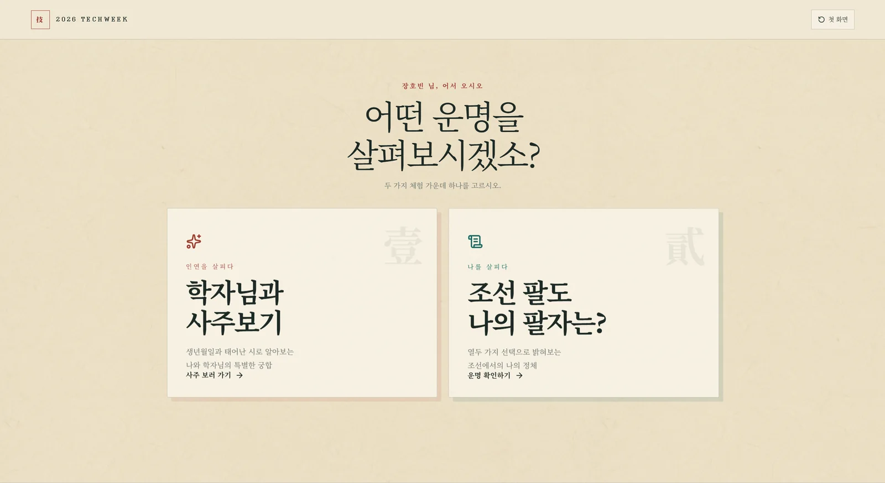
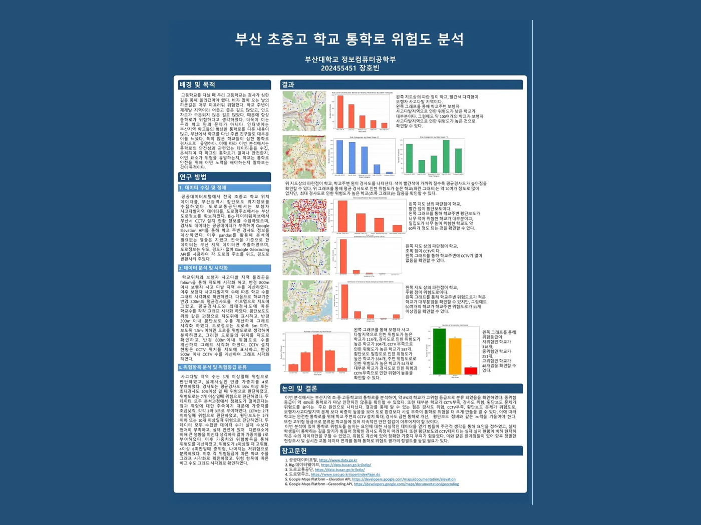

WORKS
앱 개발부터 데이터 분석까지, 문제를 발견하고 직접 구현한 프로젝트입니다.

MORB
AI가 기억 속 감정을 분석해 색과 구슬로 기록하는 추억 아카이브
프로젝트 보기 ↗
BookUs
독서 기록과 모임 운영, 책 교환을 하나로 연결한 독서 커뮤니티 앱
프로젝트 보기 ↗
조선기담
MBTI와 사주를 조선시대 세계관으로 재해석한 TECHWEEK 체험형 웹사이트
프로젝트 보기 ↗
부산 통학로 위험도 분석
공공데이터와 공간 분석으로 부산 617개 학교 주변의 통학 위험을 평가
프로젝트 보기 ↗